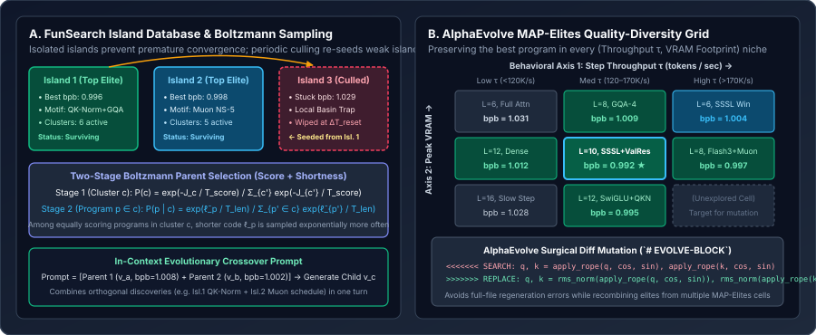

Evolutionary Code Harnesses: Island Models, MAP-Elites, FunSearch, and AlphaEvolve
Why single-parent search trees cannot recombine orthogonal breakthroughs discovered on separate branches, how Google DeepMind’s FunSearch uses multi-island two-stage Boltzmann selection to preserve structural diversity, and how AlphaEvolve combines MAP-Elites quality-diversity grids with surgical SEARCH/REPLACE diff mutations to evolve entire files and kernels.
In Chapter 02, we upgraded Karpathy’s linear $(1{+}1)$ Git ratchet into an AIDE-style UCT search tree $\mathcal{T}$. Tree search solves the single-basin trap, but it still suffers from a fundamental topological constraint of trees: every node $v \in \mathcal{T}$ has exactly one parent. Suppose Branch A discovers that adding QK-RMSNorm lowers `val_bpb` from $1.042 \to 1.018$, while an independent Branch B discovers that changing the Muon Newton-Schulz coefficients lowers `val_bpb` from $1.042 \to 1.015$. In a strict tree, those two orthogonal discoveries sit in disjoint subtrees and can never be combined unless the agent re-invents one inside the other’s subtree.
Population-based evolutionary code harnesses—pioneered by Google DeepMind’s FunSearch (Romera-Paredes et al., Nature 2024) and scaled to full codebases and GPU kernels in AlphaEvolve (Novikov et al., 2025)—turn the search graph into a Recombining Directed Acyclic Graph (DAG) by sampling multiple parent programs from an evolutionary archive into a single LLM prompt.

SEARCH/REPLACE diff blocks.1. DeepMind’s FunSearch: Multi-Island Databases & Two-Stage Boltzmann Selection
In FunSearch (Searching in the Function Space), the harness evolves a Python function `priority(el)` that a deterministic evaluator executes to construct a mathematical or combinatorial object (such as a cap set in $\mathbb{F}_3^n$ or an online bin-packing assignment). Rather than keeping only the single best program, FunSearch maintains a population partitioned into $M$ independent Islands (typically $M \in [10, 16]$).
Why islands? If a single global pool is used with greedy selection, the first moderately good program $p_1$ rapidly clones itself across the entire pool, wiping out alternative algorithmic motifs within 10 generations. With $M$ isolated islands, Island 1 can explore attention-window patterns while Island 2 explores Muon momentum schedules without overwriting each other.
Deriving the Two-Stage Boltzmann Parent Sampler
To construct an in-context evolutionary prompt on Island $m$, the harness samples $k=2$ parent programs $(p_{\text{worse}}, p_{\text{better}})$ sorted in ascending order of quality (`# v0` followed by `# v1`, prompting the LLM to generate an even better `# v2`). Within Island $m$, all valid programs with identical validation score $s_c = -J(p)$ (or discretized score bin $c$ of width $\Delta J = 0.002\text{ bpb}$) are grouped into a cluster $c \in \mathcal{C}_m$:
- Stage 1 (Cluster Selection via Score Boltzmann): A cluster $c \in \mathcal{C}_m$ is sampled with probability proportional to its Boltzmann weight at temperature $T_{\text{score}} > 0$:
$$P_{\text{cluster}}(c) = \frac{\exp(s_c / T_{\text{score}})}{\sum_{c' \in \mathcal{C}_m} \exp(s_{c'} / T_{\text{score}})},\qquad s_c = J_{\text{base}} - J_c.$$Furthermore, FunSearch anneals the score temperature over total evaluated programs $n$ via $T_{\text{score}}(n) = T_0 \big(1 - \frac{n \bmod N_{\text{period}}}{N_{\text{period}}}\big)$, alternating between broad exploration and sharp exploitation.
- Stage 2 (Intra-Cluster Selection via Code-Shortness Boltzmann): Once cluster $c$ is chosen, multiple programs $p \in c$ share the exact same score bin $s_c$ but differ in code length $\ell_p = \operatorname{LOC}(p)$. Let $\ell_{\min} = \min_{p\in c}\ell_p$ and $\ell_{\max} = \max_{p\in c}\ell_p$. Defining the normalized shortness score $\tilde{\ell}_p \in [0, 1]$:
$$\tilde{\ell}_p = \frac{\ell_{\max} - \ell_p}{\ell_{\max} - \ell_{\min} + 10^{-6}},\qquad P_{\text{prog}}(p \mid c) = \frac{\exp(\tilde{\ell}_p / T_{\text{len}})}{\sum_{p' \in c} \exp(\tilde{\ell}_{p'} / T_{\text{len}})}.$$
Notice how elegant Stage 2 is: without needing a hard line-count cutoff, any bloated program in cluster $c$ receives an exponentially smaller sampling probability than a concise program with the same `val_bpb`, continuously pressuring the evolutionary lineage toward shorter, cleaner Python code!
Worked numerical example: Two-Stage Boltzmann Sampling
Suppose Island 1 has baseline $J_{\text{base}} = 1.040\text{ bpb}$ and three score clusters at $T_{\text{score}} = 0.010$: Cluster $c_1$ ($J_{c_1}=1.030,\; s_1=0.010$), Cluster $c_2$ ($J_{c_2}=1.015,\; s_2=0.025$), and Cluster $c_3$ ($J_{c_3}=1.005,\; s_3=0.035$). Their Stage-1 probabilities are:
Now suppose top Cluster $c_3$ contains three programs with nearly identical `val_bpb` $\approx 1.005$ but different code lengths: $p_A$ ($\ell_A = 580\text{ LOC}$), $p_B$ ($\ell_B = 610\text{ LOC}$), and $p_C$ ($\ell_C = 640\text{ LOC}$). With $T_{\text{len}} = 0.5$:
- $\tilde{\ell}_A = \frac{640-580}{60} = 1.0 \implies e^{1.0/0.5} = e^2 = 7.389 \implies P(p_A \mid c_3) = \frac{7.389}{11.107} = \mathbf{66.5\%}$.
- $\tilde{\ell}_B = \frac{640-610}{60} = 0.5 \implies e^{0.5/0.5} = e^1 = 2.718 \implies P(p_B \mid c_3) = \frac{2.718}{11.107} = \mathbf{24.5\%}$.
- $\tilde{\ell}_C = \frac{640-640}{60} = 0.0 \implies e^{0.0/0.5} = e^0 = 1.000 \implies P(p_C \mid c_3) = \frac{1.000}{11.107} = \mathbf{9.0\%}$.
The concise $580$-line program $p_A$ is sampled **$7.4\times$ more frequently** as a parent than the bloated $640$-line program $p_C$.
2. DeepMind’s AlphaEvolve: MAP-Elites Archives & Surgical Diff Mutations
While FunSearch was restricted to evolving a single $10$–$30$ line priority function, AlphaEvolve (Novikov et al., 2025) scaled evolutionary code harnesses to full multi-hundred-line files (`train.py`, FlashAttention Triton/Pallas kernels, hardware circuit layouts, and tensor-decomposition search programs). Among its headline discoveries, AlphaEvolve found an exact algorithm to multiply $4 \times 4$ complex-valued matrices using **$48$ scalar multiplications**—the first improvement over Volker Strassen’s 1969 construction ($49$ multiplications) in $56$ years—and sped up Gemini’s own Pallas FlashAttention kernel by $23\%$.
AlphaEvolve introduces three critical harness upgrades over FunSearch that map directly onto `autoresearch`:
- Surgical `SEARCH / REPLACE` Diff Blocks inside `# EVOLVE-BLOCK` Regions: Asking an LLM to output a full $630$-line `train.py` on every turn wastes output tokens, increases latency by $6\times$, and risks accidental truncation of unchanged sections. AlphaEvolve prompts the LLM to emit structured conflict-marker diffs:
<<<<<<< SEARCH x = F.relu(self.c_fc(x)).square() ======= gate, up = self.c_fc(x).chunk(2, dim=-1) x = F.silu(gate) * up >>>>>>> REPLACE - MAP-Elites (Multi-dimensional Archive of Phenotypic Elites): Instead of collapsing all candidates onto a single scalar ranking, a MAP-Elites grid partitions the search space into discrete cells indexed by a low-dimensional behavioral descriptor vector $\mathbf{b}(p) \in \mathbb{R}^d$. In an `autoresearch` harness, the two natural behavioral descriptors are:
$$\mathbf{b}(p) = \Big(\underbrace{\operatorname{bin}\!\big(\tau(p)\big)}_{\text{Step throughput (tok/s)}},\;\; \underbrace{\operatorname{bin}\!\big(M_{\text{peak}}(p)\big)}_{\text{Peak VRAM (GB)}}\Big).$$Each grid cell $\mathbf{z} = (i, j)$ stores the single lowest-`val_bpb` program $p^*(\mathbf{z})$ that falls into throughput bin $i$ and memory bin $j$. Why does this help minimize `val_bpb`? Because a super-fast architecture in the $(\text{High }\tau,\, \text{Low VRAM})$ cell ($J=1.004$, $190\text{K tok/s}$, $28\text{ GB}$) is preserved as an elite parent even if a heavier model in the $(\text{Med }\tau,\, \text{Med VRAM})$ cell currently has $J=0.997$.
- Multi-Parent Crossover Prompting (1 Primary Parent + $k$ Inspirations): On each step, AlphaEvolve samples one primary parent $p_{\text{parent}}$ to be edited, plus $k \in [2, 4]$ Inspirational Elites $\{p_{\text{insp}}^{(1)}, \dots, p_{\text{insp}}^{(k)}\}$ from neighboring MAP-Elites cells or top islands. The prompt explicitly asks the LLM to synthesize structural ideas from the inspirations into $p_{\text{parent}}$ via `SEARCH/REPLACE` blocks.
3. Reference Implementation: AlphaEvolve MAP-Elites Archive & Diff Mutator
Below is a complete, dependency-free Python implementation of AlphaEvolve’s two core harness primitives: (1) parsing and deterministically applying `<<<<<<< SEARCH ... ======= ... >>>>>>> REPLACE` blocks to `train.py`, and (2) maintaining a 2D MAP-Elites Quality-Diversity grid over $(\text{Throughput},\, \text{Peak VRAM})$ with Boltzmann parent + inspiration sampling.
from dataclasses import dataclass
import math
import random
import re
DIFF_BLOCK_RE = re.compile(
r"<<<<<<< SEARCH\n(.*?)\n=======\n(.*?)\n>>>>>>> REPLACE",
flags=re.DOTALL,
)
def apply_search_replace_blocks(source_code: str, llm_response: str) -> tuple[str, int]:
"""
Applies AlphaEvolve-style SEARCH/REPLACE diff blocks to `source_code`.
Raises ValueError if any SEARCH block does not match uniquely.
"""
matches = DIFF_BLOCK_RE.findall(llm_response)
if not matches:
raise ValueError("No valid SEARCH/REPLACE diff blocks found in LLM output.")
updated = source_code
for idx, (search_chunk, replace_chunk) in enumerate(matches, start=1):
count = updated.count(search_chunk)
if count == 0:
raise ValueError(f"Diff block #{idx} SEARCH target not found in train.py.")
if count > 1:
raise ValueError(f"Diff block #{idx} SEARCH target is ambiguous ({count} matches).")
updated = updated.replace(search_chunk, replace_chunk, 1)
return updated, len(matches)
@dataclass
class EvolvedProgram:
commit_hash: str
code: str
val_bpb: float
tokens_per_sec: float
peak_vram_gb: float
loc: int
summary: str
class MAPElitesCodeArchive:
"""
2D MAP-Elites Quality-Diversity archive indexed by:
- Axis 0: Throughput bin (tokens / sec)
- Axis 1: Peak VRAM bin (GB)
Stores the lowest-val_bpb program in each (throughput_bin, vram_bin) niche.
"""
def __init__(
self,
tps_edges: tuple[float, ...] = (120_000.0, 170_000.0),
vram_edges: tuple[float, ...] = (36.0, 56.0),
baseline_bpb: float = 1.042,
temp_score: float = 0.015,
):
self.tps_edges = tps_edges
self.vram_edges = vram_edges
self.baseline_bpb = baseline_bpb
self.temp_score = temp_score
self.grid: dict[tuple[int, int], EvolvedProgram] = {}
def _cell_coords(self, tps: float, vram_gb: float) -> tuple[int, int]:
i = sum(1 for edge in self.tps_edges if tps >= edge)
j = sum(1 for edge in self.vram_edges if vram_gb >= edge)
return (i, j)
def insert(self, prog: EvolvedProgram) -> bool:
"""Inserts `prog` if its niche cell is empty or if it improves on the cell elite."""
cell = self._cell_coords(prog.tokens_per_sec, prog.peak_vram_gb)
incumbent = self.grid.get(cell)
if incumbent is None or prog.val_bpb < incumbent.val_bpb:
self.grid[cell] = prog
return True
return False
def sample_parent_and_inspirations(
self, k_inspirations: int = 2
) -> tuple[EvolvedProgram, list[EvolvedProgram]]:
"""
Boltzmann-samples 1 primary parent and k_inspirations distinct elites
across occupied MAP-Elites niches for in-context crossover.
"""
elites = list(self.grid.values())
if not elites:
raise RuntimeError("Archive is empty.")
weights = [
math.exp((self.baseline_bpb - p.val_bpb) / self.temp_score)
for p in elites
]
parent = random.choices(elites, weights=weights, k=1)[0]
others = [p for p in elites if p.commit_hash != parent.commit_hash]
inspirations = random.sample(others, k=min(k_inspirations, len(others)))
return parent, inspirations4. Questions worth answering
SEARCH block match uniquely (`count == 1`) in `train.py` before applying a diff?If a `SEARCH` block contains a generic line like `x = x + self.attn(self.norm1(x))` that appears in two different classes (or if a loop body is repeated), a blind string replace will either mutate the wrong occurrence or silently corrupt control flow. Requiring `count == 1` forces the agent to include enough surrounding context lines ($3$–$5$ lines) to anchor the edit unambiguously.
val_bpb than a single ranking list?Suppose a kernel/compilation optimization increases throughput $\tau$ by $+22\%$ (`140K` $\to$ `171K tok/s`) while accidentally perturbing a hyperparameter so `val_bpb` is $1.004$ vs. the global best $0.998$. A single-metric list discards or buries the $1.004$ program. MAP-Elites crowns it the champion of the $\text{High-}\tau$ niche, and on the very next crossover step, combining that $\text{High-}\tau$ elite with the $0.998$ elite yields a model that runs at `171K tok/s` and reaches $0.989\text{ bpb}$!